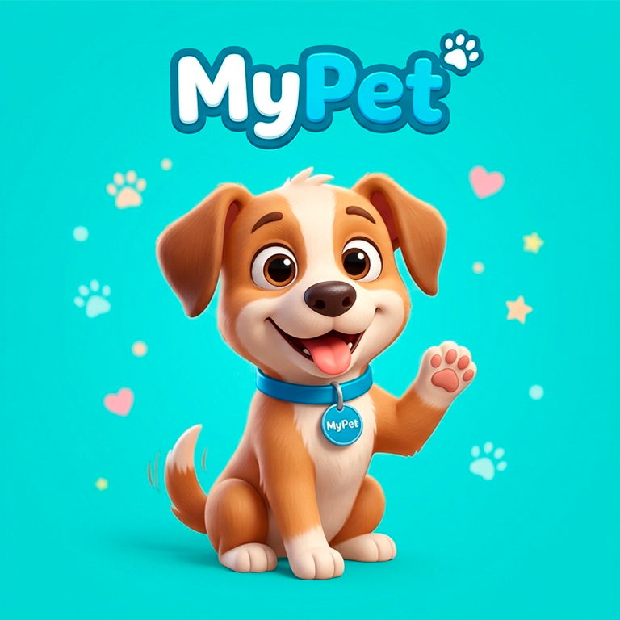
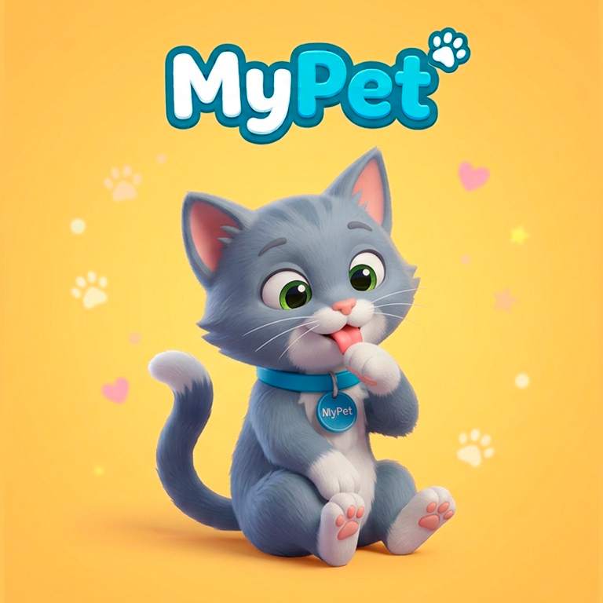

Sobre el proyecto
MyPet es una aplicación destinada a facilitar la gestión de la información y los cuidados de nuestras mascotas desde un único lugar.
Este proyecto se desarrolla como parte del módulo de Proyecto Intermodular del ciclo de Desarrollo de Aplicaciones Web.
Funcionalidades
- Registro e inicio de sesión de usuarios.
- Gestión de mascotas.
- Información sobre vacunas y salud.
- Gestión de documentos.
- Notificaciones y recordatorios.
- Configuración del usuario.
- Copias de seguridad.
Tecnologías
- HTML5
- CSS3
- JavaScript
- Git y GitHub
- Base de datos
Estado del proyecto
El proyecto se encuentra actualmente en desarrollo. Algunas funcionalidades todavía están planificadas para futuras versiones.
Imágenes
Algunas imágenes relacionadas con el proyecto MyPet.


Mini tutorial
- Crear una cuenta o iniciar sesión.
- Añadir una mascota.
- Introducir su información.
- Consultar y gestionar sus datos.